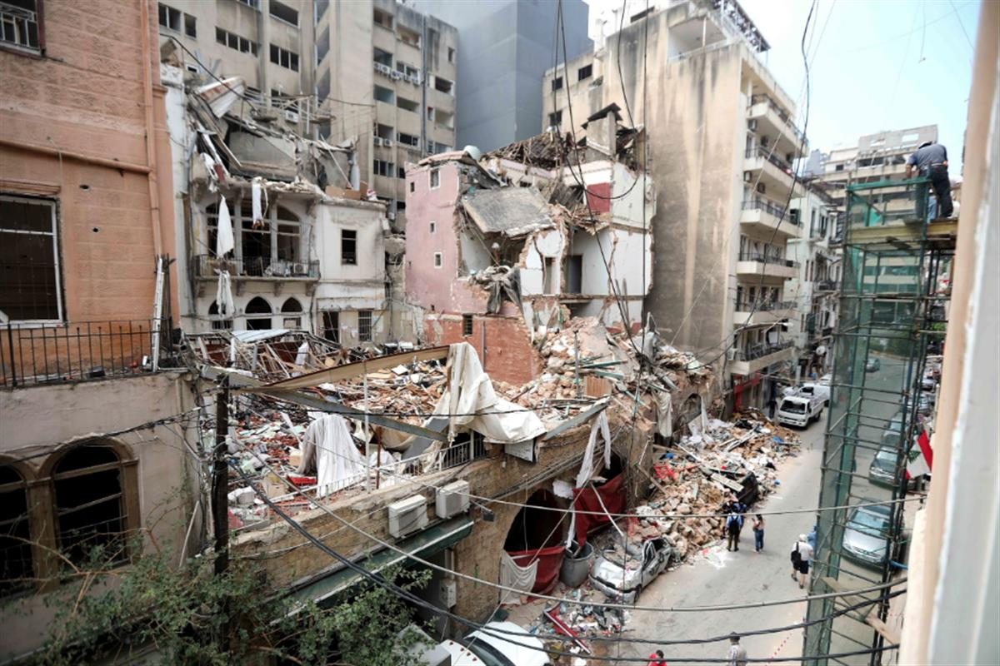

Syrian refugees help to rebuild Beirut when nobody else is prepared to do so
13 november 2020
By Joanna Kedzierska
After the shocking explosion that left the Lebanese capital in ruins three months ago, neither the government nor international organizations carried out actions to help out its people who are now becoming desperate but Syrian refugees are trying to contribute to Beirut’s restoration.
The Lebanese capital hosts up to 200,000 Syrian refugees, many of whom lost their jobs following the explosion. UNHCR estimates that before the blast about 50% of refugees were living in extreme poverty and this has now increased to 80%. Their living conditions had already become worse due to the pandemic with as many as 60% losing their jobs during the lockdown.
Moreover, the agency states that many refugees have frequently met with discrimination from local people who accuse them of causing a variety of problems such as depriving Lebanese people of jobs. Some voices say that this anti-refugee narrative was fueled by politicians who used the deep-rooted conflicts between Syria and Lebanon to divide the two nations and this has had an impact on the attitude of the Lebanese people towards refugees from its neighboring country.
Despite this, the Syrians are doing their best to rebuild ruined Beirut. According to various reports, they are refurbishing buildings, replacing glass, and repainting houses, even though some of them lost the roof over their heads and receive a pittance for what is very hard work. Their salaries have decreased dramatically as the economic situation in Lebanon significantly deteriorated as a result of the blast and the pandemic with the Lebanese pound losing almost 80% of its value in just one year. This in turn seriously affected the wages of Syrian refugees with some declaring that while they could earn about $30 a day before the economic crisis, this was now barely $6 per day.
Despite all these adversities, many Syrian refugees are still trying to help the desperate Lebanese people to rebuild their capital, whereas the same cannot be said of the government and the international community. Three months after the explosion, many of the districts that were destroyed remain in ruins.

Beirut streets still remain in ruinsUNHCR has provided 6,500 weatherproofing kits and US$600,000 in cash to over a thousand families (about 4,000 people) so far and intends to reach 10 times more people. The United States has sent medical and food aid and Germany has funded a soup kitchen and promised to allocate €1 million on farmers’ markets. Unfortunately, however, all of these efforts represent only a drop in the ocean. According to the UN, the blast affected about 219,000 people, 73,000 apartments, and 9,100 buildings. As yet, the Lebanese government has failed to offer any help and international agencies have only contributed to a very limited extent.
France kicked off the initiative by aiming to find potential partners that might help to conduct major reconstruction projects. The World Bank is also working on a solution that could allow aid to be allocated to Beirut but it wants to avoid channeling this through the local government as both the international community and Lebanese citizens do not believe it to be credible or trustworthy partner. Furthermore, international assistance is strictly dependent on reforms that the Lebanese authorities are obliged to carry out. As yet, there is no sign of readiness to meet this requirement since Saad Hari, who became the new Prime Minister two weeks ago, has so far failed to even form a government.
At least 200 people were killed and around 5,000 injured after thousands of tons of unsafely stored ammonium nitrate exploded in Beirut on August 4, 2020. The Lebanese authorities claimed that as many as 300,000 people had been made temporarily homeless and that collective losses might reach $10-15bn (£8-11bn), according to BBC.
SOURCE: DEVELOPMENT AID